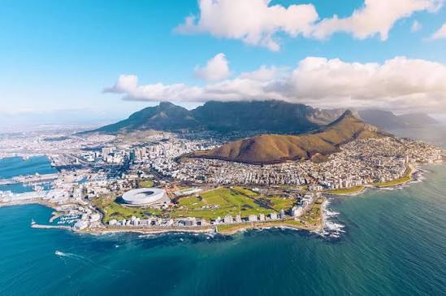

A África do Sul é uma excelente escolha para quem busca diversidade de paisagens e aventura. A Cidade do Cabo destaca-se por reunir praias fascinantes e montanhas imponentes, como a Table Mountain. Para a estadia, o The Silo Hotel oferece uma opção de luxo no V&A Waterfront com vistas espetaculares, enquanto o Mojo Hotel, em Sea Point, atende quem procura uma alternativa mais acessível e com ambiente descontraído.